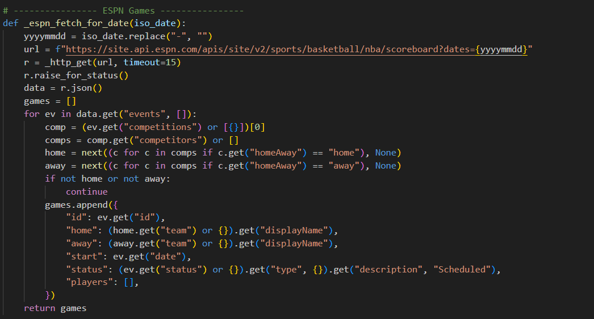
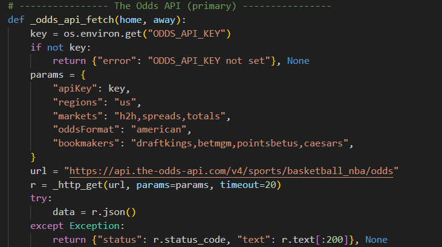
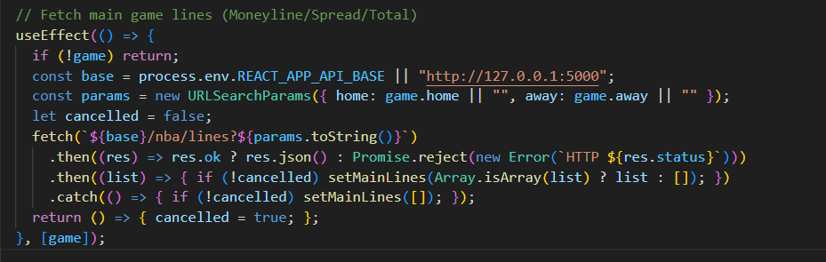
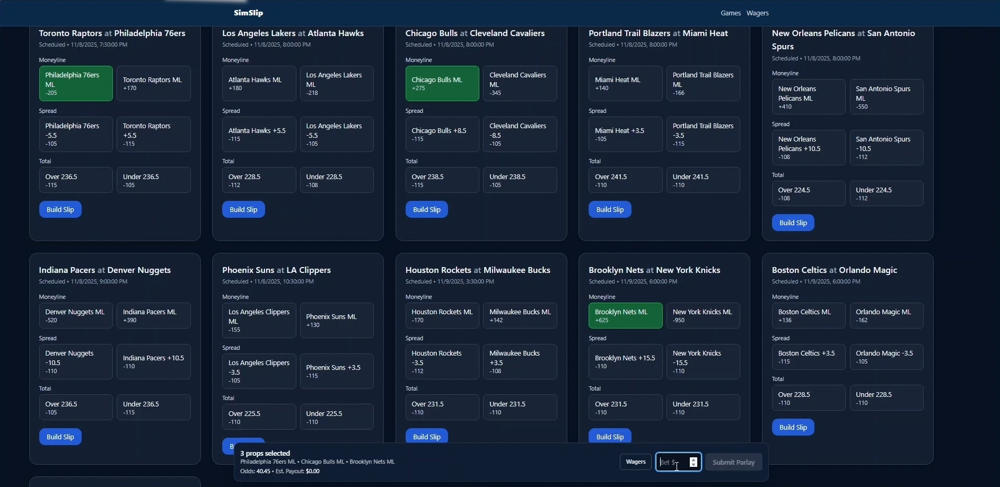
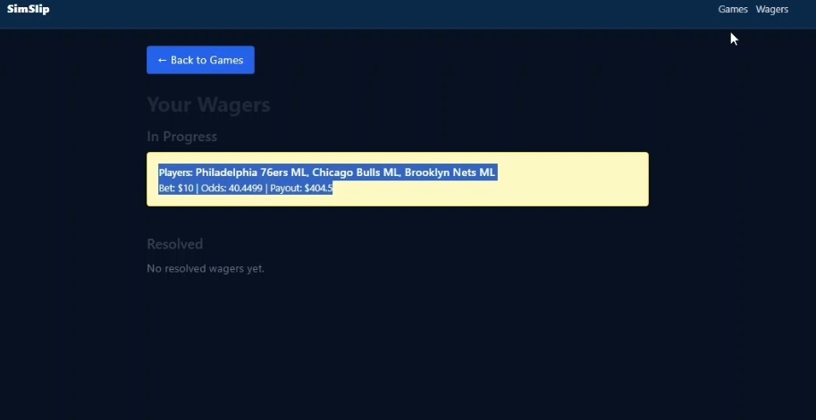

Purpose:
The goal of this project is to demonstrate a full-stack workflow connecting a React frontend and a Flask backend to real sports data. SimSlip showcases how APIs, databases, and UI state management come together to create a functional and interactive application.
Setup:
The project is split between a React frontend and a Flask backend that communicate through REST API routes. React handles all interface logic and rendering, while Flask manages data retrieval, normalization, and persistence using SQLite.
Key Features:
• Frontend (React): Displays NBA games and betting lines fetched from the backend. Users can add picks, enter a stake, and see payouts calculated instantly.
• Backend (Flask): Handles API requests, normalizes data, returns clean JSON to the frontend, and stores wagers in SQLite.
• APIs (Data Sources): Uses ESPN’s JSON feed for schedules and an odds provider API for moneyline, spread, and total lines. All calls are made on the server.
• Persistence (SQLite): Saves slips and legs with stake, odds, and timestamp. The Wagers page displays the saved history.
The following documents key elements of my project, followed by the full video of my results.
ESPN Fetch Function:

Retrieves the NBA schedule from ESPN’s JSON feed, normalizes the data, and returns it to the frontend through /api/games.
Odds Fetch Function:

Queries the odds provider using a server-side environment key, maps markets to a unified structure, and returns standardized results to React.
Game Lines Fetch:

React effect that requests betting lines from the Flask backend whenever a game is selected and updates the UI dynamically.
Home Screen:

Displays NBA matchups pulled from ESPN’s API. Each card is generated from normalized game data.
Wagers Page:

Shows the saved bet slip from SQLite, including selections, stake, total odds, and calculated payout.
Video:
Here is the video of me demonstrating SimSlip.